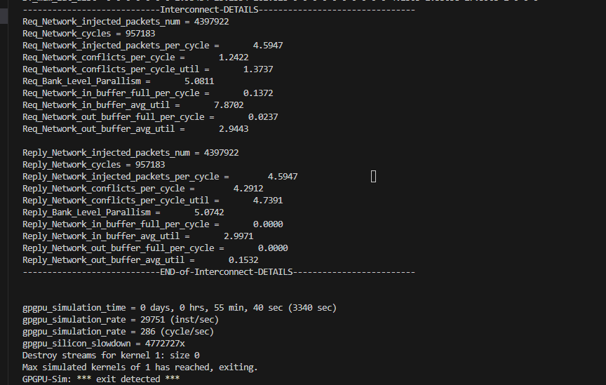
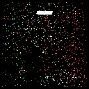

I STRONGLY RECOMMEND following the Readme.md from the original Github respository rather than this one!!!
Common Command
1
2
3
4
5
| // 查看gcc版本
gcc --version
// ubuntu下解压文件
tar -zxvf filename.tar.gz
|
Notes
1
2
3
4
5
6
7
8
9
10
11
12
13
14
15
16
17
18
19
20
21
22
23
24
25
| cd vulkan-sim/
source setup_environment
cd ../mesa-vulkan-sim/
// 1. 遇到meson版本问题，先升级到指定版本
// 2. 找不到libdrm，sudo apt-get install pkg-config
// 3. 找不到Embree，配置路径似乎和`readme`显示的不一致：`\vulkan-sim-root\mesa-vulkan-sim\src\gallium\frontends\lavapipe\meson.build`, 可能的原因是原作者更改了一些代码，但是暂时没更新`readme`。推测是在这一步执行前配置了Embree路径。
meson --prefix="${PWD}/lib" build -Dvulkan-drivers=swrast -Dgallium-drivers=swrast -Dplatforms=x11 -D b_lundef=false -D buildtype=debug
ninja -C build/ install
export VK_ICD_FILENAMES=${PWD}/lib/share/vulkan/icd.d/lvp_icd.x86_64.json
cd ../vulkan-sim/
// 运行第一次失败
// 再运行一次成功生成libcudart.so
// 推测在这一步配置gpgpusim_lib_dir
// 即解决ninja -C build/ install 第一次失败的报错
make -j
cd ../mesa-vulkan-sim/
ninja -C build/ install
|
TroubleShooting
1
2
3
4
5
6
7
8
9
10
11
12
13
14
| // 1. LLVM 不明原因输出很多missing
// 解决方案：卸载重装
dpkg -l | grep llvm
sudo apt-get remove llvm clang
sudo apt-get purge llvm clang
sudo apt-get autoremove
sudo apt-get update
sudo apt-get install llvm clang
llvm-config --version
llvm-config --shared-mode
// 2. 没有正确invoke到Vulkan-Sim
// 解决方案： 需要source setup_environment，并且export $VK_ICD_FILENAMES
export VK_ICD_FILENAMES=<vulkan-sim-root>/mesa-vulkan-sim/lib/share/vulkan/icd.d/lvp_icd.x86_64.json
|
GDB
1
2
3
4
5
6
7
8
| // 调用gdb
gdb --args ./RayTracer --scene 18 --width 128 --height 128 --samples 2
// 运行
(gdb)run
// 重定向输出
(gdb)set inferior-tty ./output.txt
|
Current Progress
Segmentation fault已解决，跟贴Git Issue。ppm文件已经可以成功输出。

但是生成的图像有点怪。
Reference